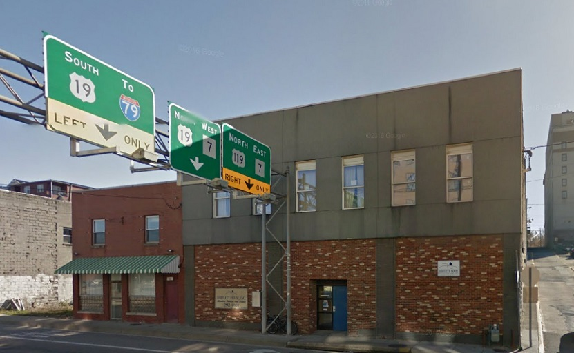

Bartlett House

The Salvation Army provides many services to those facing persistent homelessness and those who are homeless due to emergency circumstances. They provide services for individuals and families including counseling, education and housing.
What Do They Need Most?
Supplies
- Personal Hygiene Items
- Household Items
- Food (Canned or Non-Perishable preferred)
- Cleaning Products
- Other Stuff: Clerical Supplies, Bus Passes, Padlocks, etc.
Volunteers
- Administrative Support
- Bulk Item Transport
- Fundraising
- Maintenence & Skills: Carpentry, Plumbing, Painting, Electrical Repair, etc.
- Cleaning & Laundry
- Meal Prep & Kitchen Help